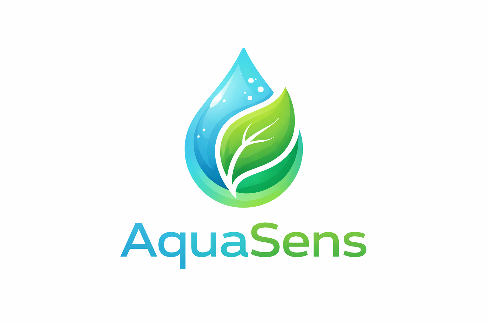

Pametni sistem nove generacije koji koristi senzore vlage, temperature i svjetlosti kako bi automatski optimizirao rast biljaka i smanjio potrošnju vode.
AquaSens predstavlja inovativno rješenje za automatizovano uzgajanje biljaka koristeći napredne senzore za mjerenje vlage u zemljištu, temperature i intenziteta svjetlosti. Sistem u realnom vremenu analizira podatke i aktivira zalijevanje tačno onda kada je biljci potrebno, čime se postiže maksimalna efikasnost rasta i minimalna potrošnja vode.
Integracijom pametne logike i mogućnošću daljeg proširenja (IoT povezivanje), AquaSens pruža stabilan i pouzdan način za modernu poljoprivredu i kućni uzgoj biljaka.